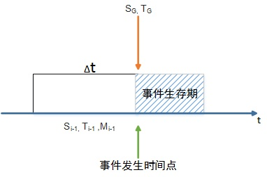
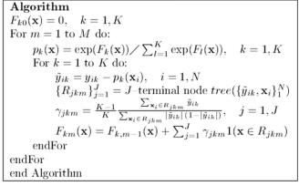

|


图
19:
事件预测的特征维度
4.3.3
机器学习算法
由于事件的发生具有离散性的特点，因此，针对
某区域、某时间段内事件的发生，我们主要对事件是
否发生、事件发生频次，这两个指标进行预测。
(1)事件是否发生预测
事件是否发生的预测问题， 即： 类别1
（事件
发生）、 类别2（事件不发生）， 属于标准的二类份
分类问题。我们主要采用了包括Decision Tree（决策
树）、Random Forest（随机森林）、SVM（支持向量
机）、Gradient Boosting（梯度提升决策树）等多种方
法，并对其预测的准确率进行比较。
决策树是以实例为基础的归纳学法，它着眼于从
一组无次序、无规则的实例中推理出以决策树表示的
分类规则。构造决策树的目的是找出属性和类别之
间的关系，用来预测将来未知类别记录的类别。它
采用自顶向下递归的方式，在决策树内部节点进行
属性比较，并根据不同属性值判断从该节点向下的分
支，在决策树的叶节点得到结论。主要的决策树算法
有ID3、C4.5等。
随机森林是包含多个决策树的分类器，输出的类
别由某些树输出的类别的众数而定。它利用自助重抽
样的方法从原始样本中抽取多个样本，对每个自助重
抽样样本进行决策树建模，然后对多棵树的预测结果
进行组合，通过投票得出最终预测结果。大量的理论和
实证研究都证明了随机森林具有很高的预测准确率，
对异常值和噪声具有很好的容忍度，且不容易出现过
拟合。
支持向量机通过寻求结构化风险最小的方案来提
高学习机泛化能力，实现经验风险和置信范围最小化，
其原本是针对线性可分情况进行分析，对于线性不可
分的情况，可以通过使用非线性映射算法将在低维特
征空间线性不可分的样本转化到高维特征空间使其线
性可分，从而使得高维特征空间采用线性算法对样本
的非线性特征进行线性分析成为可能。
梯度提升决策树是一种提升算法，它主要的思想
是，每一次模型都建立在之前建立模型损失函数的梯
度下降方向。损失函数描述模型的不靠谱程度，损失
函数越大说明模型越容易出错。如果模型能够让损失
函数持续下降，说明模型在不停改进，而最好的方式
就是让损失函数在其梯度的方向上下降。
实验证明，Gradient Boosting（梯度提升决策树）效
果最好，因此将其作为我们的最终预测算法。
Gradient Boosting（梯度提升决策树）算法的伪代
码如下，其中，Fk(x)是函数估计值，迭代次数是M,每
次迭代根据预测准度计算损失函数的梯度，进而更新
估计函数。
图
20: Gradient-Boosting算法伪代码
(2)事件发生频次
对于事件发生次数的预测问题，即连续值的预测
问题，我们主要采用了回归树的方法对其进行预测。
分类回归树类似于决策树，在计算过程中充分利
用二叉树的结构，即根节点包含所有样本，在一定的
分割规则下根节点被分割为两个子节点，这个过程又
在子节点上重复进行，成为一个回归过程，直至不可
再分成为叶节点为止。预测阶段类似与分类过程，利
用对应类别的样本回归计算得到预测值。
按照要求需要给出三类事件（任选一类）的发生
数量和发生地区的概率。发生数量已有上述方法给出，
发生地区的概率可通过该地区的预测发生数在全国各
省预测总数的占比计算。
5
实验对比与分析
5.1
事件提取算法评估
抽样选取个事件(n
= 1000)，包含事件ID、新闻ID、
新闻标题、导语、内容等信息。对每一个事件，实际
包含该事件的所有新闻集合为∩
Ui,已标注的为事件i的
Ui为已标注为事件i
的新闻中标
新闻集合为Ei,则Ei
注正确的集合,Ui
−
Ei漏标注的新闻集合.(|A|表示几
个A所含元素的数目)。我们定义误报率和漏报率为：
误报率(Error Report Rate, ERR)：
ERR
=
∑
|Ei
−
E
∩i
Ui|=|Ei|
i
n
(4)
漏报率(Missing Report Rate, MRR)：
MRR
=
∑
|Ui
−
Ei|=|Ui|
i
n
(5)
在我们的实验中，所得三类事件的误报率和漏报
率如表??所示。
|